- 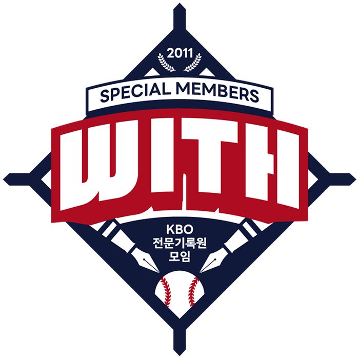
- 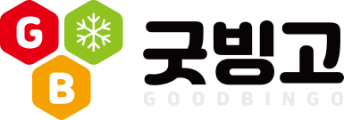
- 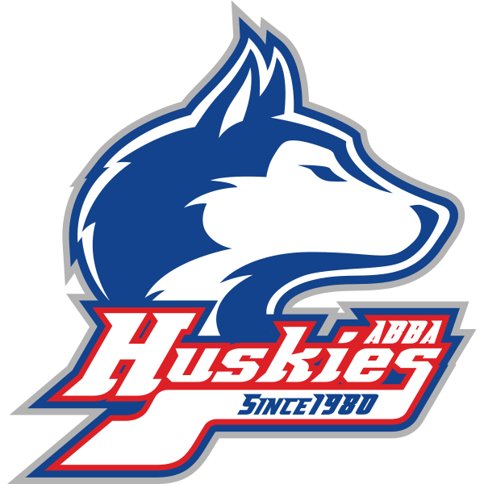
- 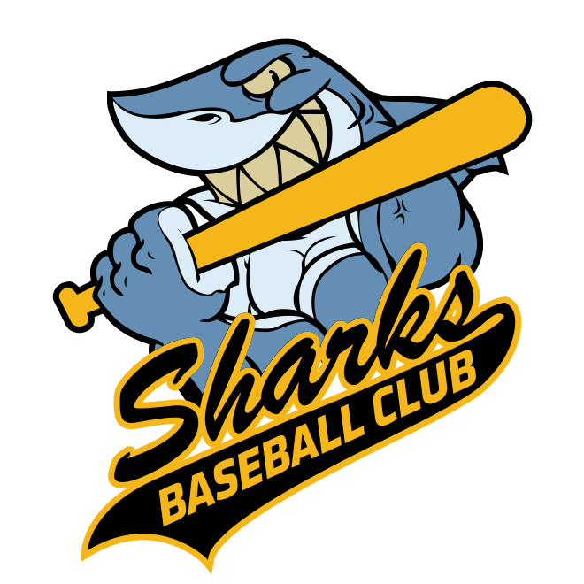
- 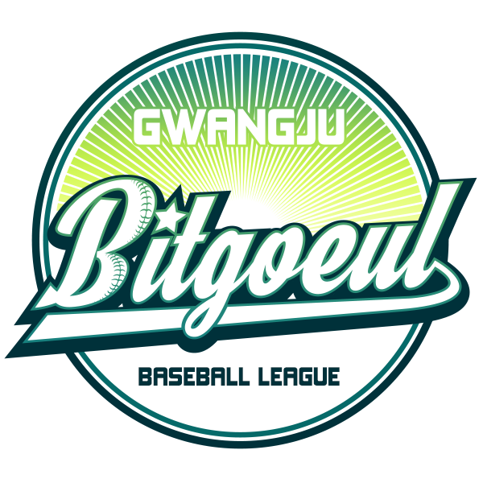
- 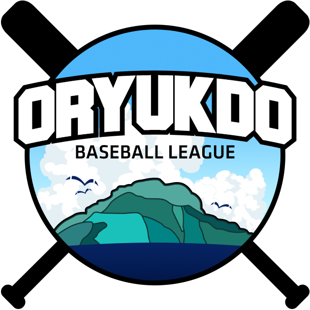
- 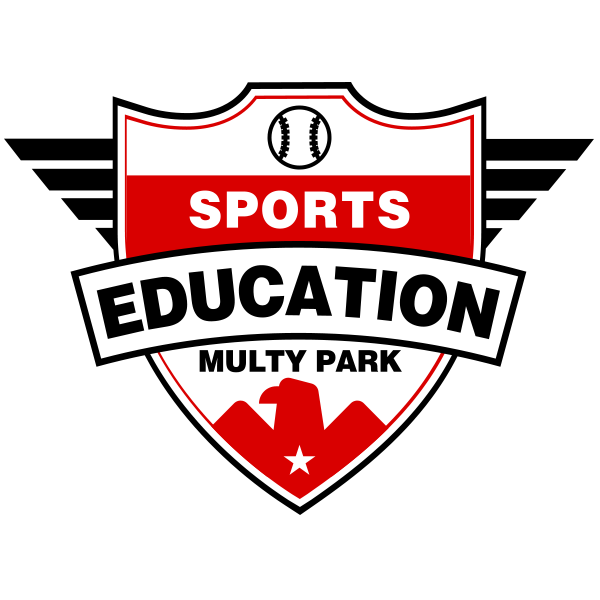
- 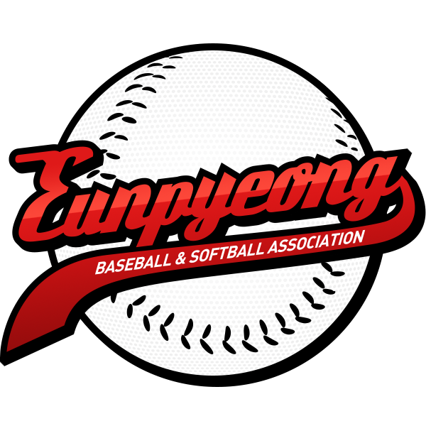
- 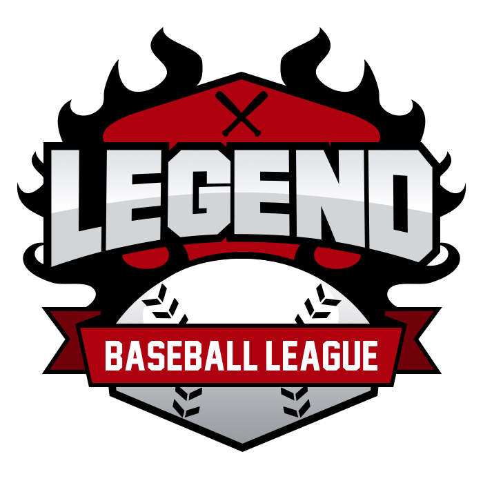
- 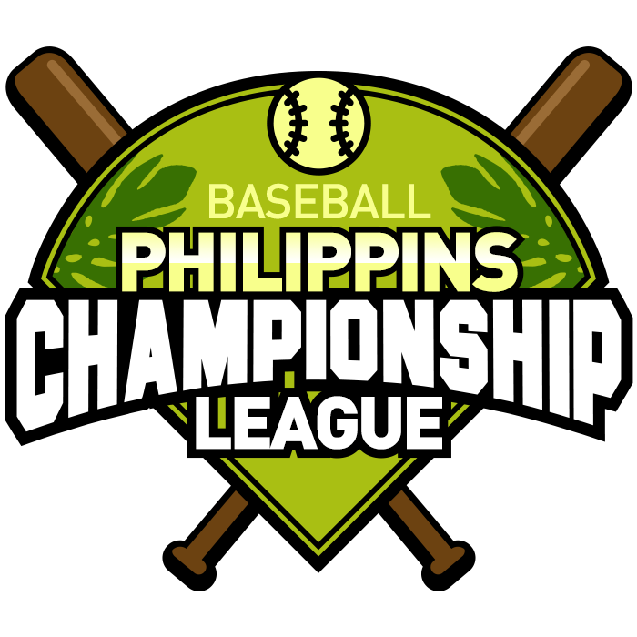
- 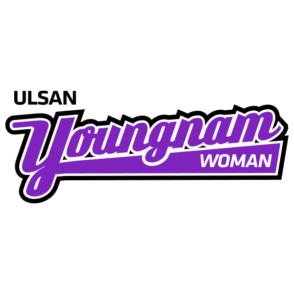
- 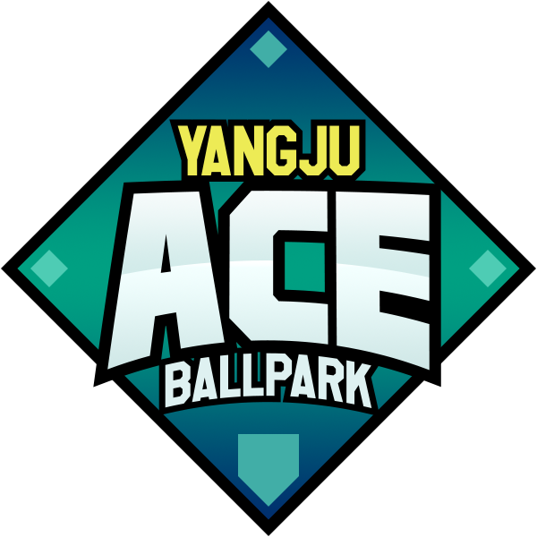
-
KBO WITH
Emblem Design
KBO 전문기록원 모임 엠블럼
2011년에 조직된 KBO 소속 전문기록원들의 모임 엠블럼을 새로 리뉴얼했다.
단체의 정확한 정체성을 알기 어렵던 야구공 형태의 기존 엠블럼이 아쉬웠기 때문에, 기록원이라는 존재에 초점을 맞추고자 했다.
야구 기록지의 모양을 따온 마름모와 펜, 그 펜촉 끝이 닿는 야구공으로 야구라는 이야기를 써내려가는 사람들을 표현하고자 했다.
-
굿빙고
Logo Design
굿프랜즈의 B2C 온라인 직영몰, 굿빙고 BI
굿빙고는 "Good"과 "氷庫"를 합친 말로, 식자재 전문 업체 굿프랜즈의 첫 자사몰이다.
정육면체 큐브를 기울였을 때 볼 수 있는 육각형 모티브에 굿프랜즈의 CI에서 사용된 3개의 색상을 입히고 이니셜과 눈꽃결정을 넣어 완성했다.
브랜드명이 품고있는 위트와 캐주얼함을 표현하기 위해 부드럽고 리듬감이 느껴지는 폰트를 활용해 깔끔하게 표현했다.
-
부자사장
Logo Design
굿프랜즈의 B2B 온라인 직영몰, 부자사장 BI
모두 함께 부자되자는 브랜드 슬로건을 어필하기 위해 금괴 모양의 아이코닉한 심볼을 활용했다. 심볼의 진한 오렌지 컬러는 부자사장 쇼핑몰의 메인 컬러로 사용했다.
선의 끝이 둥근 볼드한 폰트를 사용하여 든든하고 친근한 느낌이 들도록 헸다.
-
Abba Huskies 팀
Emblem Design
팀명의 허스키를 살린 일러스트와 시원한 느낌의 푸른색과 대조되는 붉은 색을 메인으로 사용하였다. 꺾임이 있는 굵은 서체로 강하고 단단한 느낌을 주고자 했다.
-
Sharks 팀
Emblem Design
팀명의 익살스럽고 강인한 인상의 상어 캐릭터를 일러스트로 작업하고 클래식한 느낌의 캘리그래피 영문서체와 리본 모티브로 야구단 느낌을 강조하였다.
상어가 들고있는 배트와 비슷한 각도로 텍스트를 기울여 생동감을 주고자 했다.
-
광주 빛고을 리그
Emblem Design
빛고을이라는 지명에 포커스하여 빛이 분산되는 느낌의 집중선을 활용했다. 청록과 밝은 연두색의 그라데이션으로 밝게 빛나는 느낌을 주었다.
Bitgoeul 영문의 i에 별모양 모티브를 주어 빛이라는 컨셉을 더 강조했고, 대문자 B에 야구실밥의 장식요소를 더해 야구리그라는 정체성을 부여했다.
-
오륙도리그
Emblem Design
청정지역 오륙도에서 진행하는 야구리그라는 컨셉에 맞추어, 오륙도의 전경을 일러스트로 작업하여 깨끗하고 푸른 느낌을 주고자했다.
섬이라는 느낌을 주는 작은 갈매기 모티브와 야구경기에 중요한 요소인 쾌청한 날씨가 느껴지도록 초록-파랑 계열의 색상들을 배리에이션하였다.
-
대구 스포츠 교육 멀티 파크
Emblem Design
스포츠 레슨이라는 주사업에 주목하여, 특수한 학교 같은 느낌을 내보고자 했다.
사관학교를 연상시키는 독수리와 날개, 방패 모티브로 강인한 분위기를 의도했으며 고채도의 붉은 색과 검정색으로 심플하게 연출했다.
-
은평 야구 소프트볼 협회
Emblem Design
야구공을 메인 모티브로 활용, 밋밋하지 않게 도트 패턴을 입히고 심플한 실밥 형태를 사용했다. 세련된 영문 서체의 색상은 칼날같은 느낌의 그라데이션 효과를 주어 매끈하고 깔끔한 분위기를 강조했다.
-
레전드 리그
Emblem Design
불타는 듯이 일렁이는 형태의 모티브와 가운데를 중심으로 부드럽게 확장하는 텍스트로 강인하고 단단한 느낌을 주었다.
X모양으로 크로스된 야구배트와 아랫부분이 V형태로 컷팅된 야구공 모티브로 실드 형태의 고전적인 엠블럼 모양을 연출했다.
-
필리핀 베이스볼 챔피언십
Emblem Design
따뜻한 기후의 필리핀에서 개최되는 한인 야구 챔피언십인 만큼, 연두빛 나뭇잎과 초록색을 활용하여 필리핀 지역의 환경을 표현해보았다.
야구장 형태의 실드와 교차되는 배트로 전체적인 형태를 안정적으로 잡아주었으며 균일한 굵기의 두꺼운 영문서체에 외곽선을 주어 타이틀이 뚜렷하게 보이도록 했다.
-
울산 영남 여자 야구 리그
Emblem Design
기존에 울산협회에서 운영되던 야구팀의 엠블럼 컬러를 활용하였다.
클라이언트의 요구대로 단순하고 복잡하지 않도록 서체의 어우러짐에서 고민 많이 했다. 끝이 각지지만 부드럽게 꺾이는 서체를 활용하여 부드러우면서도 날카로운 느낌을 내고자 했다.
-
양주 에이스볼 파크
Emblem Design
야구장의 플레이트 모티브를 활용하였다. 딱딱하고 뾰족하게 떨어지는 폰트의 외곽을 둥글게 하여 뾰족하기만 한 전반적인 형태에 부드러움을 가미했다.
파랑과 청록, 대비되는 연노랑색을 매치하여 가독성을 높여주었다.